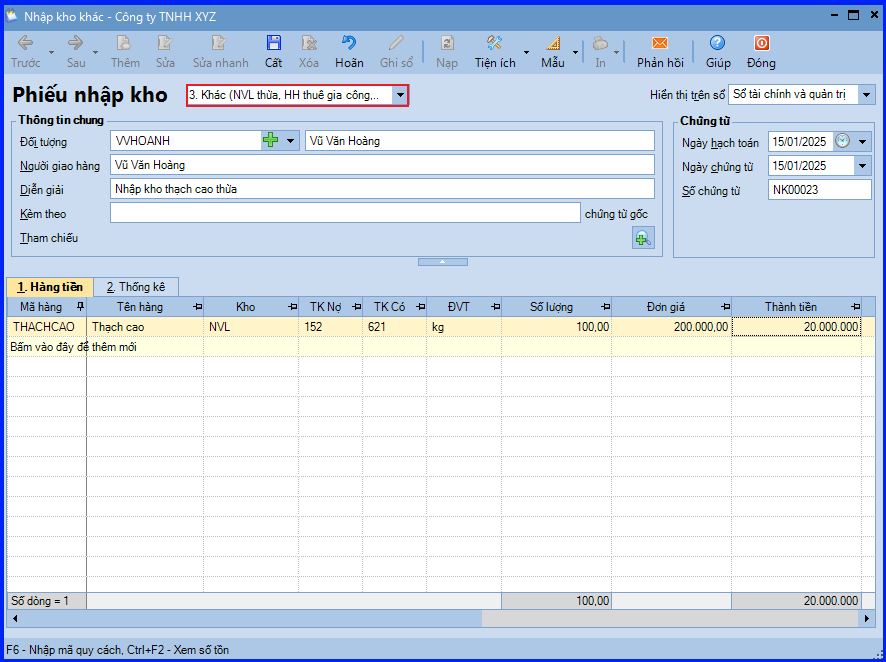
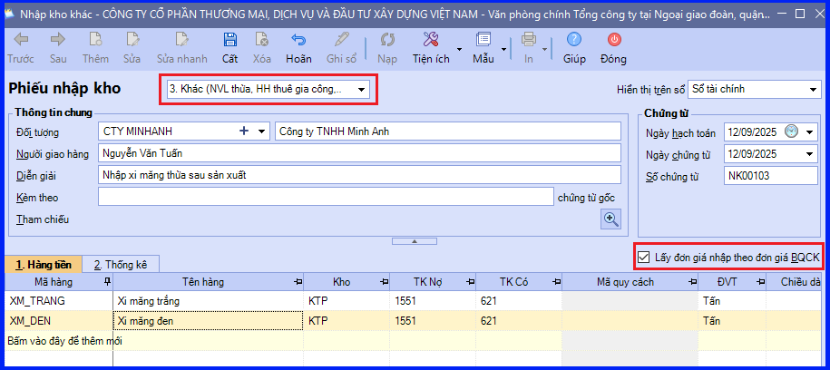

Hướng dẫn cách hạch toán ghi sổ nghiệp vụ nhập kho nguyên vật liệu dùng cho sản xuất không sử dụng hết trên phần mềm Misa
Đối với những nguyên vật liệu được xuất ra để sản xuất, sau khi sản xuất thành phẩm xong còn thừa sẽ được mang về nhập kho:
- Quá trình sản xuất kết thúc, đối với những nguyên vật liệu xuất thừa bộ phận sản xuất sẽ lập đề nghị nhập kho.
- Kế toán kho lập Phiếu nhập kho nguyên vật liệu thừa, sau đó chuyển Kế toán trưởng ký duyệt.
- Căn cứ vào phiếu nhập kho, thủ kho kiểm, nhận hàng và ký vào phiếu nhập kho.
- Thủ kho ghi sổ kho, còn kế toán ghi sổ kế toán kho.
1. Cách định khoản hạch toán khi kho nguyên vật liệu dùng cho sản xuất không sử dụng hết
- Nợ TK 152 - Nguyên liệu, vật liệu
- Có TK 621, 623, 627…
2. Các bước hạch toán, ghi sổ nghiệp vụ nhập kho nguyên vật liệu dùng cho sản xuất không sử dụng hết trên phần mềm Misa
Nghiệp vụ nhập kho nguyên vật liệu thừa sau sản xuất được thực hiện trên phần mềm như sau:
- Vào phân hệ "Kho" => chọn tab "Nhập, xuất kho" => chọn chức năng "Thêm\Nhập kho".
- Chọn loại phiếu nhập kho là "Khác" (Nguyên Vật Liệu thừa, Hàng Hóa thuê gia công):

- Khai báo chứng từ nhập kho, sau đó ấn "Cất".
- Ấn chọn chức năng "In" trên thanh công cụ, sau đó chọn mẫu phiếu nhập kho cần in.
CHÚ Ý:
- Trường hợp Thủ kho có tham gia sử dụng phần mềm, sau khi phiếu nhập kho nguyên vật liệu thừa không sử dụng hết được lập, chương trình sẽ tự động sinh phiếu nhập kho trên tab "Đề nghị nhập, xuất kho của Thủ kho". Thủ kho hiện việc ghi sổ phiếu nhập kho vào sổ kho.
- Từ MISA SME 2022 – R26, trường hợp đơn vị áp dụng phương pháp tính giá Bình quân cuối kỳ => chương trình cho phép người dùng lấy đơn giá nhập vật từ, Nguyên Vật Liệu thừa theo đơn giá Bình Quân Cuối Kỳ.
- Nếu tích chọn "Lấy đơn giá nhập theo đơn giá Bình Quân Cuối Kỳ": Sau khi NSD tính giá bình quân cuối kỳ, chương trình tự động áp lại đơn giá vốn cho Phiếu Nhập Kho này. Và Phiếu Nhập Kho này không được đưa vào tính giá xuất kho.
- Nếu bỏ tích chọn "Lấy đơn giá nhập theo đơn giá Bình Quân Cuối Kỳ": Đơn giá ngầm định theo Tùy chọn lấy đơn giá mua của Vật Tư Hàng Hóa khi lập Phiếu Nhập Kho khác trên menu "Hệ thống" => "Tùy chọn" => "Mua hàng".

- Chọn "Lấy theo đơn giá mua cố định trong danh mục" => thì khi lập chứng từ Đơn mua hàng, Mua hàng, Mua dịch vụ, Nhập kho đơn giá sẽ được lấy theo đơn giá mua cố định, tương ứng với loại tiền và đơn vị tính.
- Chọn "Lấy theo đơn giá mua gần nhất trong danh mục" => thì khi lập chứng từ Đơn mua hàng, Mua hàng, Mua dịch vụ, Nhập kho đơn giá sẽ được lấy theo đơn giá mua gần nhất, tương ứng với loại tiền và đơn vị tính.
- Chọn "Lấy theo đơn giá mua gần nhất của nhà cung cấp" => thì khi lập chứng từ Đơn mua hàng, Mua hàng, Mua dịch vụ, Nhập kho đơn giá sẽ được lấy theo đơn giá mua gần nhất của nhà cung cấp, tương ứng với loại tiền và đơn vị tính.
- Chọn "Không ngầm định đơn giá mua" => thì trên chứng từ khi lập chứng từ Đơn mua hàng, Mua hàng, Mua dịch vụ, Nhập kho đơn giá sẽ được bỏ trống.
KẾ TOÁN DIỆU TÂM chúc các bạn làm tốt!
=============================
Nếu bạn muốn thành thạo các kỹ năng làm kế toán trên phần mềm Misa
Thì bạn có thể tham khảo "Khóa Học Thực Hành Kế Toán Trên Phần Mềm Misa" tại Công ty đào tạo Kế Toán Diệu Tâm
Trong khóa học này, bạn sẽ được dạy cách lên sổ sách, lập báo cáo tài chính trên phần mềm Misa
Chi tiết về chương trình đào tạo bạn xem tại đây nhé: Khóa học thực hành kế toán trên Misa
=============================
=============================
Nếu bạn muốn thành thạo các kỹ năng làm kế toán trên phần mềm Misa
Thì bạn có thể tham khảo "Khóa Học Thực Hành Kế Toán Trên Phần Mềm Misa" tại Công ty đào tạo Kế Toán Diệu Tâm
Trong khóa học này, bạn sẽ được dạy cách lên sổ sách, lập báo cáo tài chính trên phần mềm Misa
Chi tiết về chương trình đào tạo bạn xem tại đây nhé: Khóa học thực hành kế toán trên Misa
=============================